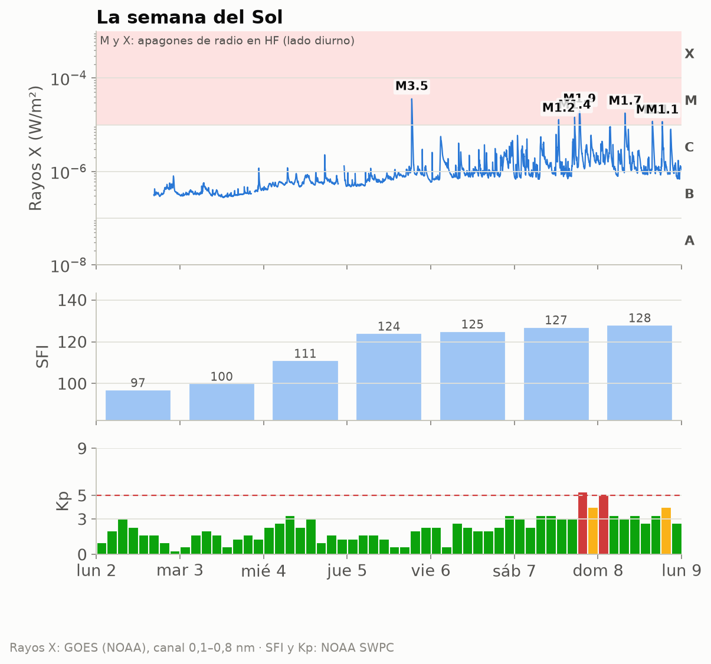
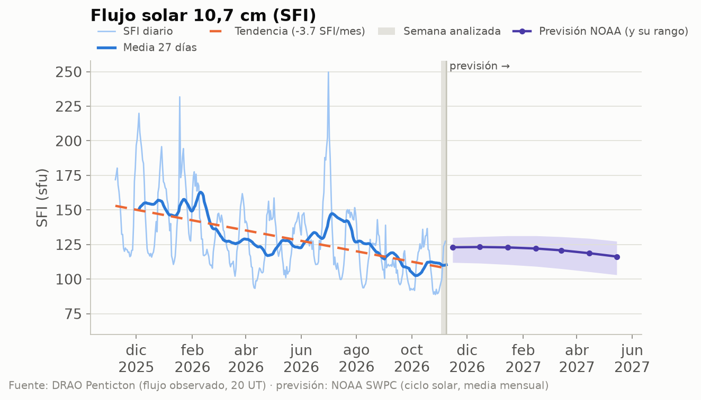
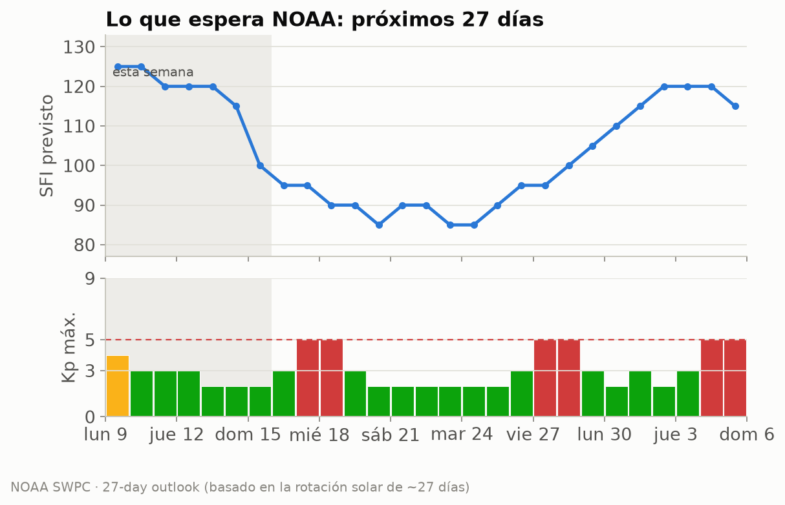
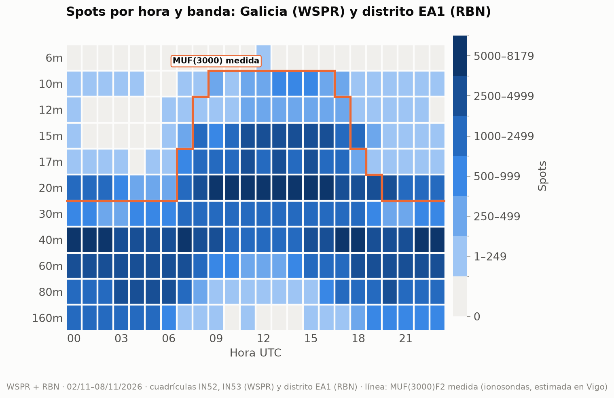
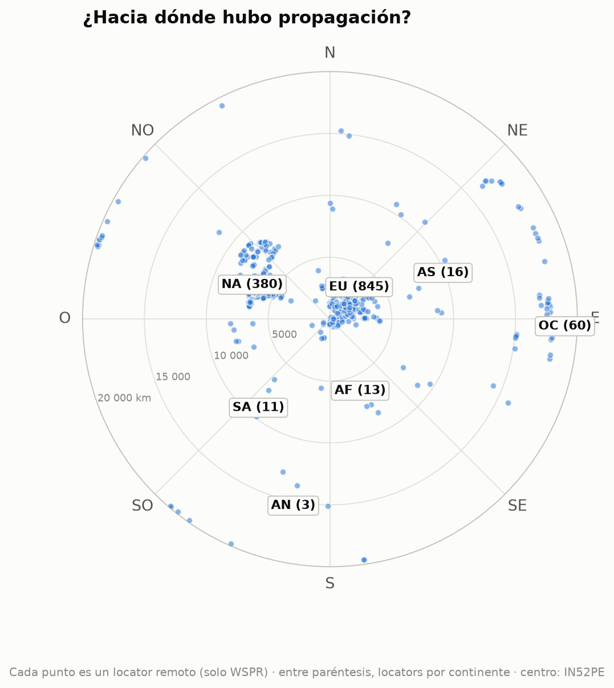
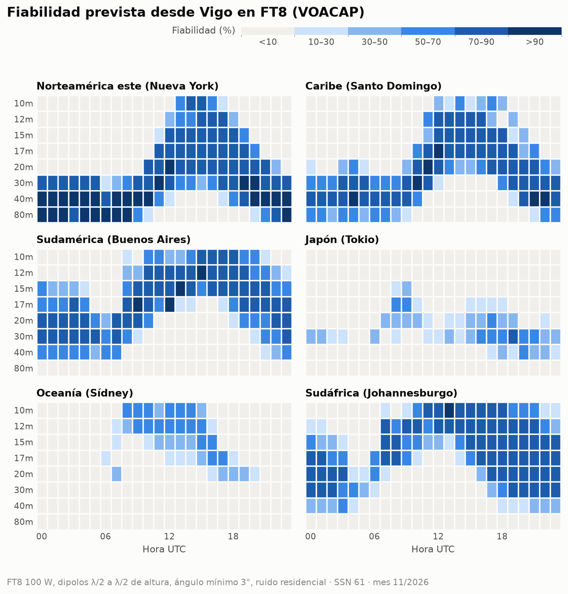
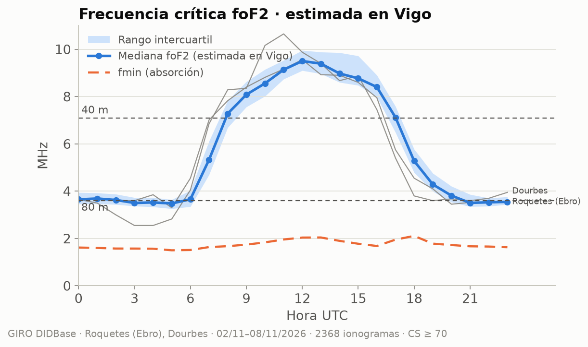

EA1RKV · Unión de Radioaficionados de Vigo-Val Miñor · estación de referencia Vigo (IN52PE) · semana analizada: 2 de noviembre de 2026 – 8 de noviembre de 2026 · previsión: lun 9/11 – dom 15/11
Este informe combina lo que dice la teoría (índices solares, predicciones) con lo que pasó de verdad (spots reales desde Galicia). Todas las horas en UTC salvo que se indique lo contrario.
| Día | SFI | Manchas | Ap | Kp máx. | |
|---|---|---|---|---|---|
| lun 2/11 | 97 | 37 | 7 | 3,00 | 🟢 |
| mar 3/11 | 100 | 41 | — | 2,00 | 🟢 |
| mié 4/11 | 111 | 64 | — | 3,33 | 🟢 |
| jue 5/11 | 124 | 89 | — | 2,33 | 🟢 |
| vie 6/11 | 125 | 91 | 9 | 3,33 | 🟢 |
| sáb 7/11 | 127 | 93 | 22 | 5,33 | 🔴 |
| dom 8/11 | 128 | 72 | 21 | 5,00 | 🔴 |
Semáforo Kp: 🟢 ≤ 3 tranquilo · 🟡 4 inquieto · 🔴 ≥ 5 tormenta.

Cómo leerla, de arriba abajo. Rayos X: cada pico es una fulguración; si entra en la franja rosa (clases M y X), en la cara iluminada de la Tierra la capa D absorbe la HF durante minutos u horas (el famoso «apagón de radio»). Los huecos de la línea son cortes de datos: cerca de los equinoccios el satélite pasa cada día un rato por la sombra de la Tierra. SFI: cuanto más alto, más arriba llega la MUF. Kp: agitación del campo magnético cada 3 horas; las barras rojas son tormenta.

Estamos en la fase descendente del ciclo 25: el SFI baja poco a poco, con altibajos de ~27 días (la rotación del Sol). La línea discontinua naranja marca la tendencia del último año; a la derecha, en violeta, la previsión mensual de NOAA con su rango de incertidumbre (zona sombreada).
Próximos 3 días (NOAA, la previsión más fiable; emitida el lun 9/11 12:30 UTC):
| Día | Kp máx. previsto | Prob. apagón de radio R1–R2 | Prob. apagón fuerte (R3+) | |
|---|---|---|---|---|
| lun 9/11 | 4,67 | 🟡 | 60 % | 15 % |
| mar 10/11 | 3,67 | 🟢 | 60 % | 15 % |
| mié 11/11 | 2,67 | 🟢 | 60 % | 15 % |
R1–R2 = fulguración M (apagón menor o moderado en la cara diurna); R3+ = fulguración X.
Esta semana: SFI entre 100 y 125, Ap máximo 15 y Kp máximo 4 (🟡 inquieto); días con Kp ≥ 4 previstos: lun 9/11.

Hasta el sáb 5/12: SFI entre 85 y 125; posible agitación geomagnética (Kp ≥ 4) el lun 9/11, mar 17/11, mié 18/11, vie 27/11, sáb 28/11, vie 4/12, sáb 5/12. Esta previsión se basa en que el Sol gira sobre sí mismo cada ~27 días: las regiones activas y los agujeros coronales que vimos hace una rotación suelen «volver a asomarse». Por eso acierta bastante con las tendencias, pero no puede anticipar una fulguración concreta.
A largo plazo: NOAA prevé para mayo de 2027 un SFI medio mensual de 116 (entre 103 y 127). Es decir, el ciclo 25 sigue bajando: poco a poco, 10 m y 12 m abrirán menos días. Ojo: la media de los últimos 27 días (110) va por debajo del rango que NOAA preveía para este mes (unos 123): el Sol se está apagando más deprisa de lo esperado, y las bandas altas lo notarán.
Esta semana se registraron 380 736 spots: 295 736 de WSPR con una estación gallega en un extremo (5 estaciones en las cuadrículas IN52/IN53) y 85 000 de la Reverse Beacon Network en CW/RTTY con una estación del distrito EA1 (el RBN no da locator, así que no podemos separar Galicia de Asturias, Cantabria y Castilla y León). Las bandas con más actividad fueron 40m (93 709), 20m (91 915), 60m (57 305), 80m (34 040), y la hora más movida, las 15 UTC.

Cómo leerlo: cada casilla es una hora UTC en una banda; cuanto más oscura, más spots. Fíjate en cómo las bandas altas (10–15 m) se «encienden» con el Sol y las bajas (40–80 m) de noche.
La línea naranja es la MUF(3000)F2 medida por las ionosondas: por debajo de ella, la teoría dice que la banda abre para un salto de 3 000 km. Si los spots siguen la línea, teoría y realidad coinciden.
| Banda | Distancia | Estación gallega (WSPR) | Corresponsal | Locator | Continente | Cuándo | SNR |
|---|---|---|---|---|---|---|---|
| 160m | 5 992 km | EB1A | KX4AZ/T (oyó a Galicia) | EN74gc | Norteamérica | mié 4/11 04:48 UTC | -26 dB |
| 80m | 17 045 km | EB1A | VK5ARG (oyó a Galicia) | PF95ht | Oceanía | mié 4/11 19:48 UTC | -26 dB |
| 60m | 17 045 km | EB1A | VK5ARG (oyó a Galicia) | PF95ht | Oceanía | jue 5/11 19:30 UTC | -25 dB |
| 40m | 19 869 km | EB1A | ZL3RCK (oyó a Galicia) | RE66ft | Oceanía | vie 6/11 05:36 UTC | -17 dB |
| 30m | 19 831 km | EB1A | ZL3AB (oyó a Galicia) | RE66im | Oceanía | jue 5/11 19:04 UTC | -25 dB |
| 20m | 19 849 km | EB1A | ZL3AX (oyó a Galicia) | RE66hq | Oceanía | sáb 7/11 04:44 UTC | -8 dB |
| 17m | 18 000 km | EB1A | VK2EFM (oyó a Galicia) | QF56oq | Oceanía | vie 6/11 12:38 UTC | -27 dB |
| 15m | 19 820 km | EB1A | ZL2005SWL (oyó a Galicia) | RE68mx | Oceanía | sáb 7/11 13:18 UTC | -26 dB |
| 12m | 15 116 km | EB1A | VK6XT (oyó a Galicia) | OF88ji | Oceanía | lun 2/11 07:24 UTC | -27 dB |
Distancias de círculo máximo medidas desde IN52PE (WSPR).
Spots de WSPR (Galicia) y RBN (distrito EA1) juntos, por continente del corresponsal:
| Continente | Spots | 160m | 80m | 60m | 40m | 30m | 20m | 17m | 15m | 12m | 10m | 6m |
|---|---|---|---|---|---|---|---|---|---|---|---|---|
| Europa | 298 716 | 14280 | 28307 | 45495 | 77129 | 23288 | 64582 | 19129 | 22202 | 1817 | 2486 | 1 |
| Norteamérica | 74 141 | 86 | 5344 | 11130 | 14927 | 1026 | 25388 | 3184 | 10005 | 1418 | 1633 | · |
| África | 4 671 | 418 | 351 | 671 | 918 | 447 | 720 | 343 | 465 | 185 | 153 | · |
| Oceanía | 1 693 | · | 16 | 9 | 370 | 269 | 837 | 118 | 68 | 5 | 1 | · |
| Asia | 1 074 | · | 22 | · | 321 | 29 | 311 | 86 | 193 | 31 | 81 | · |
| Sudamérica | 438 | 1 | · | · | 44 | 3 | 74 | 5 | 130 | 25 | 156 | · |
| Antártida | 3 | · | · | · | · | · | 3 | · | · | · | · | · |

Mapa centrado en Vigo: el ángulo es el rumbo al que apuntaría tu antena y la distancia al centro, los kilómetros. Solo WSPR, porque el RBN no da locator: cada punto es un locator distinto (1 328 en total) y la cifra entre paréntesis es cuántos hay de cada continente. Por eso no coincide con los spots de la tabla, que suman todos los spots de WSPR y RBN.
Datos de las digisondas de Roquetes (Ebro) (40,8° N), Dourbes (50,1° N). Solo usamos ionogramas con confianza de autoescalado ≥ 70 % y descartamos los valores que se salen de lo que marcan sus vecinos (los errores típicos del escalado automático).
Algo: la foEs pasó de 5,6 MHz, lo bastante para aperturas cortas en 10 m, pero no llegó a 6 m.
| Ionosonda | Día | Desde | Hasta (UTC) | foEs máx. | MUF Es (~1 800 km) | Banda | Spots WSPR |
|---|---|---|---|---|---|---|---|
| Roquetes (Ebro) | dom 8/11 | 11:25 | 13:20 | 7,2 MHz | 36 MHz | 10m | 0 |
| Dourbes | dom 8/11 | 13:15 | 13:15 | 6,2 MHz | 31 MHz | 10m | 0 |
| Dourbes | dom 8/11 | 14:05 | 14:05 | 6,0 MHz | 30 MHz | 10m | 0 |
| Roquetes (Ebro) | lun 2/11 | 13:15 | 13:35 | 6,0 MHz | 30 MHz | 10m | 0 |
| Roquetes (Ebro) | mié 4/11 | 11:30 | 11:35 | 6,2 MHz | 31 MHz | 10m | 0 |
| Roquetes (Ebro) | mié 4/11 | 12:10 | 12:50 | 6,4 MHz | 32 MHz | 10m | 0 |
| Roquetes (Ebro) | sáb 7/11 | 13:35 | 14:20 | 7,2 MHz | 36 MHz | 10m | 0 |
| Roquetes (Ebro) | sáb 7/11 | 15:00 | 16:20 | 7,0 MHz | 35 MHz | 10m | 0 |
La MUF de la Es para un salto de 1 500–2 000 km es unas 5 veces la foEs. «Spots WSPR»: spots de esa banda a 800–2 500 km desde Galicia durante el episodio.
Comparamos, hora a hora, lo que dice la MUF(3000) medida con lo que se oyó de verdad a 2 000–4 000 km (un salto de F2) en 20m, 17m, 15m, 12m. Coinciden en el 77 % de las 96 casillas hora × banda. En 22 hubo spots aunque la MUF típica no llegaba, sobre todo en 20m y 17m: días mejores que la mediana o esporádica E. La línea naranja del mapa de calor muestra lo mismo de un vistazo.
En FT8 (el modo más usado, y el más parecido a los spots WSPR/RBN de la sección 2): bandas con fiabilidad media ≥ 50 % por franja horaria (UTC), la mejor primero. En cursiva, la mejor banda cuando ninguna llega al 50 % (apertura posible pero poco fiable):
| Destino | km | Rumbo | 00–04 | 04–08 | 08–12 | 12–16 | 16–20 | 20–24 |
|---|---|---|---|---|---|---|---|---|
| Norteamérica este (Nueva York) | 5 307 | 291° | 80m, 40m, 30m | 80m, 40m, 30m | 40m, 30m | 17m, 20m, 15m | 20m, 17m, 30m | 40m, 30m, 80m |
| Caribe (Santo Domingo) | 6 288 | 265° | 40m, 30m, 80m | 40m, 30m, 80m | 30m, 40m, 20m | 17m, 15m, 12m | 17m, 20m, 15m | 40m, 30m, 20m |
| Sudamérica (Buenos Aires) | 9 922 | 219° | 20m, 30m, 17m | 30m, 20m, 40m | 15m, 17m, 12m | 12m, 15m, 10m | 12m, 10m, 15m | 17m, 15m, 20m |
| Japón (Tokio) | 10 780 | 25° | 30m (29 %) | — | 20m (36 %) | 30m (33 %) | 30m | 30m |
| Oceanía (Sídney) | 18 035 | 69° | — | — | 10m, 12m | 12m | 20m (40 %) | — |
| Sudáfrica (Johannesburgo) | 8 489 | 146° | 20m, 30m, 17m | 20m (34 %) | 12m, 15m | 10m, 12m, 15m | 12m, 15m, 17m | 20m, 15m, 17m |

En CW (a oído hace falta unos 14 dB más de señal que en FT8, así que se abren menos bandas):
| Destino | 00–04 | 04–08 | 08–12 | 12–16 | 16–20 | 20–24 |
|---|---|---|---|---|---|---|
| Norteamérica este (Nueva York) | 40m, 30m, 80m | 40m, 80m | 30m, 40m | 17m, 20m, 15m | 20m, 17m | 40m, 30m |
| Caribe (Santo Domingo) | 40m | 40m | 30m (39 %) | 15m, 17m | 17m | 30m, 40m |
| Sudamérica (Buenos Aires) | 20m | 30m (44 %) | 15m | 12m | 10m, 12m | 17m, 15m |
| Japón (Tokio) | — | — | — | — | 30m (27 %) | — |
| Oceanía (Sídney) | — | — | 10m (27 %) | 12m (31 %) | — | — |
| Sudáfrica (Johannesburgo) | 20m | — | 12m (36 %) | 10m | 12m, 10m, 15m | 15m, 17m, 20m |
Supuestos: 100 W, dipolos de media onda a media longitud de onda de altura en los dos extremos, ángulo de salida mínimo de 3° y ruido residencial. SSN usado: 61 (SSN efectivo del SFI previsto (118)). En SSB hacen falta ~30 dB más que en FT8. VOACAP describe el promedio mensual: un día concreto puede ir mucho mejor o peor.
Combinando Roquetes (Ebro), Dourbes y llevándolas a la latitud y la hora local de Vigo (El Arenosillo sola, 5° más al sur, resulta algo optimista), la foF2 mediana estimada en Vigo fue de 4,8 MHz la semana pasada: de 3,5 MHz de madrugada a 9,5 MHz hacia las 12 UTC. El pico de la capa F2 estuvo de mediana a 264 km.

| Trayecto | sec φ | 80 m abierta | 40 m abierta | MUF (mín.–máx.) |
|---|---|---|---|---|
| NVIS (Galicia, < 200 km) | 1,00 | 07–20 UTC | 09–17 UTC | 3,5–9,5 MHz |
| Vigo – Madrid (~460 km) | 1,32 | todo el día | 08–18 UTC | 4,3–13,0 MHz |
| Vigo – Barcelona (~900 km) | 1,89 | 20–09, 16–17 UTC · absorción: 09–16, 17–20 UTC | 07–20 UTC | 5,8–19,0 MHz |
A 3 000 km (un salto de F2, p. ej. Canarias–Escandinavia): la MUF(3000)F2 medida fue de 10,2 a 32,1 MHz (máxima hacia las 12 UTC). 20m: 07–19 UTC · 17m: 08–18 UTC · 15m: 08–18 UTC · 12m: 09–17 UTC · 10m: 12–14 UTC.
¿Por qué importa foF2? Es la frecuencia más alta que la capa F2 devuelve a tierra cuando la señal sube en vertical. En NVIS (Near Vertical Incidence Skywave, antenas bajas que radian hacia arriba) solo rebotan las frecuencias por debajo de foF2: si foF2 cae por debajo de 7,1 MHz, los 40 m «saltan» Galicia y hay que bajar a 80 m. Para trayectos más largos la señal llega inclinada y la capa aguanta más: la MUF de un salto es aproximadamente foF2 · sec(φ), donde φ es el ángulo de incidencia en la ionosfera, calculado con la altura real del pico (hmF2) que mide la ionosonda. Para 3 000 km usamos directamente la MUF(3000)F2 que publica la digisonda, que ya tiene en cuenta la curvatura de la Tierra.
¿Y por abajo? La capa D absorbe las frecuencias bajas de día. La fmin (frecuencia más baja del ionograma) sube a mediodía por esa absorción: la usamos para estimar la LUF (≈ fmin · √sec φ en la capa D). Una banda está «abierta» si la MUF la supera con un 10 % de margen y la LUF queda por debajo; «absorción» son las horas en que la MUF la deja pasar pero la capa D la cierra.
El jue 12/11, en Vigo amanece a las 07:21 UTC y anochece a las 17:16 UTC. Durante el crepúsculo la absorción de la capa D desaparece antes de que se deshaga la capa F: es el momento de buscar DX en 160, 80 y 40 m a lo largo del terminador.
| Destino | Orto DX | Ocaso DX | Terminador común (±45 min) | Noche en los dos extremos |
|---|---|---|---|---|
| Norteamérica este (Nueva York) | 11:39 | 21:40 | — | 21:41–07:21 |
| Caribe (Santo Domingo) | 10:44 | 22:02 | — | 22:03–07:21 |
| Sudamérica (Buenos Aires) | 08:42 | 22:33 | — | 22:32–07:21 |
| Japón (Tokio) | 21:13 | 07:36 | 06:51–08:06 UTC (orto Vigo / ocaso DX) | 17:16–21:14 |
| Oceanía (Sídney) | 18:45 | 08:33 | 07:48–08:06 UTC (orto Vigo / ocaso DX) | 17:16–18:45 |
| Sudáfrica (Johannesburgo) | 03:11 | 16:32 | 16:31–17:17 UTC (ocaso Vigo / ocaso DX) | 17:17–03:11 |
El «terminador común» es la línea gris propiamente dicha (amanecer o anochecer a la vez en los dos extremos). La «noche en los dos extremos» es la ventana para 160 y 80 m, y a menudo para 40 m.
| Concurso | Empieza (UTC) | Termina (UTC) | Horas |
|---|---|---|---|
| K1USN Slow Speed Test | vie 13/11 20:00 | vie 13/11 21:00 | 1 |
| WAE DX Contest, RTTY | sáb 14/11 00:00 | dom 15/11 23:59 | 48 |
| PODXS 070 Club Triple Play Low Band Sprint | sáb 14/11 00:00 | lun 16/11 23:59 | 72 |
| JIDX Phone Contest | sáb 14/11 07:00 | dom 15/11 13:00 | 30 |
| SKCC Weekend Sprintathon | sáb 14/11 12:00 | lun 16/11 00:00 | 36 |
| OK/OM DX Contest, CW | sáb 14/11 12:00 | dom 15/11 12:00 | 24 |
| CQ-WE Contest | sáb 14/11 19:00 | lun 16/11 05:00 | 34 |
| AWA Bruce Kelley 1929 QSO Party | sáb 14/11 23:00 | lun 23/11 03:00 | 196 |
| Classic Exchange, Phone | dom 15/11 14:00 | mié 18/11 08:00 | 66 |
| Run for the Bacon QRP Contest | dom 15/11 23:00 | lun 16/11 01:00 | 2 |
Consejo: el meteor scatter funciona mejor al amanecer local, cuando la Tierra «barre» los meteoros de frente. Modos: MSK144 (6 m/2 m) con WSJT-X.
Los mejores pases (elevación máxima ≥ 30°) de cada satélite:
| Satélite | Día | AOS (UTC) | LOS (UTC) | Hora local | Elev. máx. | Min |
|---|---|---|---|---|---|---|
| SO-50 | lun 9/11 | 01:24 | 01:38 | 02:24 | 67° | 14 |
| ISS | lun 9/11 | 02:18 | 02:29 | 03:18 | 78° | 11 |
| AO-27 | lun 9/11 | 11:04 | 11:19 | 12:04 | 85° | 15 |
| RS-44 | lun 9/11 | 13:51 | 14:14 | 14:51 | 86° | 23 |
| AO-7 | lun 9/11 | 18:17 | 18:39 | 19:17 | 89° | 22 |
| FO-29 | mar 10/11 | 06:13 | 06:29 | 07:13 | 84° | 16 |
| ISS | mar 10/11 | 19:50 | 20:01 | 20:50 | 88° | 11 |
| AO-123 | mar 10/11 | 21:36 | 21:46 | 22:36 | 68° | 11 |
| AO-7 | mié 11/11 | 18:10 | 18:32 | 19:10 | 83° | 22 |
| RS-44 | jue 12/11 | 00:32 | 00:52 | 01:32 | 83° | 20 |
| SO-50 | jue 12/11 | 00:35 | 00:49 | 01:35 | 67° | 14 |
| FO-29 | jue 12/11 | 06:08 | 06:24 | 07:08 | 89° | 16 |
| AO-27 | jue 12/11 | 11:13 | 11:28 | 12:13 | 80° | 15 |
| RS-44 | vie 13/11 | 13:33 | 13:55 | 14:33 | 78° | 22 |
| AO-27 | vie 13/11 | 22:01 | 22:16 | 23:01 | 86° | 15 |
| FO-29 | sáb 14/11 | 06:03 | 06:18 | 07:03 | 82° | 15 |
| AO-7 | sáb 14/11 | 07:56 | 08:18 | 08:56 | 80° | 22 |
| ISS | sáb 14/11 | 18:16 | 18:27 | 19:16 | 89° | 11 |
| SO-50 | sáb 14/11 | 23:47 | 00:01 | 00:47 | 67° | 14 |
| AO-123 | dom 15/11 | 08:56 | 09:07 | 09:56 | 76° | 11 |
| AO-123 | dom 15/11 | 21:51 | 22:01 | 22:51 | 73° | 11 |
PENDIENTE: un socio debe escribir aquí su comentario (qué trabajó, qué oyó, qué recomienda para la semana). El informe no se publica sin este párrafo.
Borrador generado automáticamente el 2026-11-09 16:32 UTC por el script del radioclub EA1RKV. Las secciones sin datos indican que la fuente no respondió esta semana.